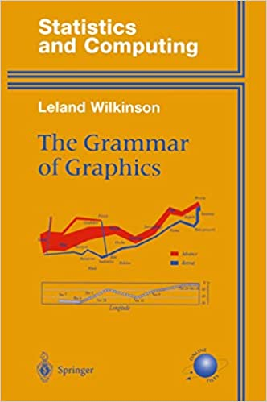
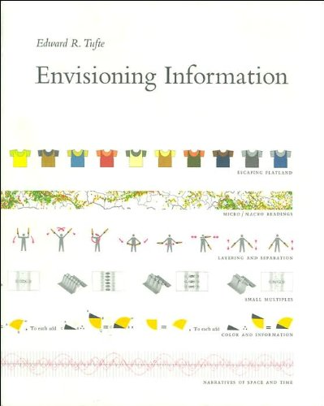

Chapitre 1 Quelques exemples de Datavisualisation


1.4 Le Data-Driven DJ de Brian Foo
1.5 Quelques théories et théoriciens
1.5.1 Jacques Bertin

1.6 Leland Wilkinson

1.7 Edward Tufte

1.8 Des outils pour visualiser
1.8.1 Outils bureau
- Tableau
- ESRI Dashboards
- MViewer
- …
1.8.2 Python
- dash
- plotly
- matplotlib
- seaborn
- bokeh
- …
1.8.3 R
- Shiny
- ggplot
- Rgl
- …
1.8.4 Javascript
- leaflet
- D3 & ObservableHQ
- svelte
- kepler
- Charts.js
- …